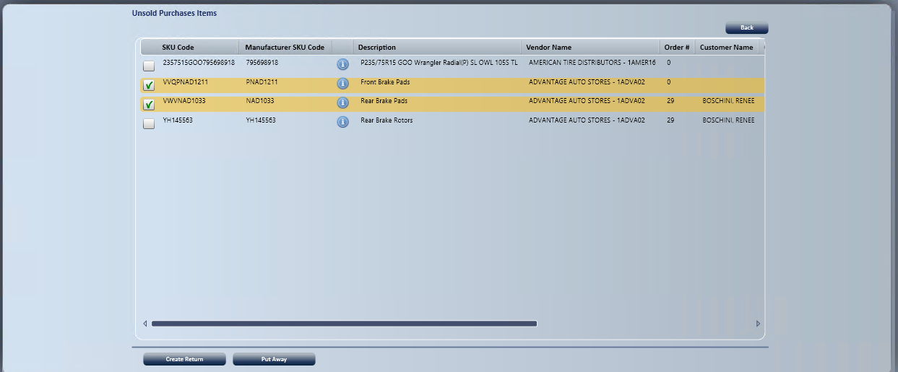
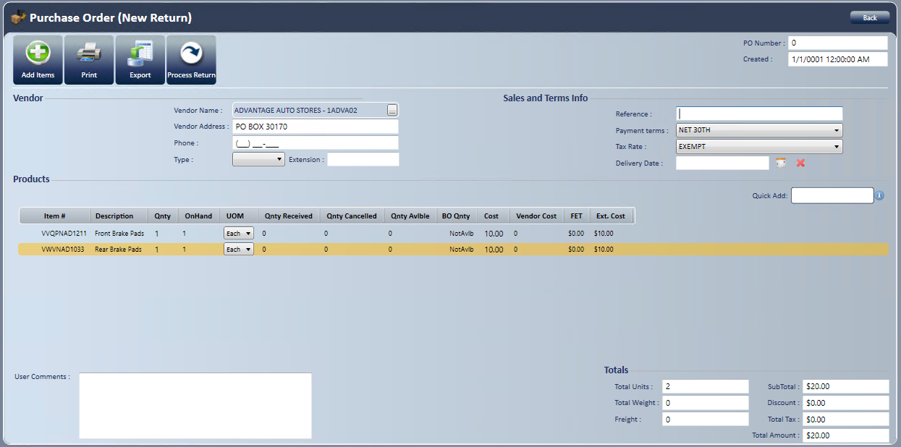

Unsold Purchases
Use Unsold Purchases to create a return or put away items that were bought on a purchase order and haven't been relieved from inventory. Create Return automatically creates a return purchase order and a processed inventory receipt that removes the product from inventory. It also creates the AP invoice (vendor credit) unless the System Setting Disable Automatic AP Invoice Generation is on.
Before you start: Requires the Purchase Orders - Unsold Purchases access right.
- On the Home screen, select , then select Unsold Purchases .
- Unsold Purchases Items: Lists items with their Receipt ID, Order # and Customer Name.
- Use Filter to narrow the list by SKU code, vendor, description, order number or customer name.
- Unsold Cores: Lists cores with quantity available that may need to go back to a supplier. Create Return and Put Away work the same way as below. See Parts Cores.

Create a return
- Select the items to return.
- Selecting several items for the same vendor produces one transaction with multiple items.
- Select Create Return .

- Verify the information is correct. Don't change the quantity to a negative number.
- Select Process Return .
- When a dialog box asks you to confirm, select Yes or No.
- Selecting Yes processes the purchase order and inventory receipt listed in the dialog box, with negative quantities by default.
- If you use automatic AP invoice generation, the return AP invoice is also created.
- In the Return PO Success dialog box, which lists the purchase order and inventory receipt numbers, select OK.
- Print the purchase order, inventory receipt or AP invoice if you want.
- You return to the Home screen.
Put items away
- Select the items to put away. Putting an item away keeps it and removes it from the list.
- Selecting several items for the same vendor produces one transaction with multiple items.
- Select Put Away .
- When a warning asks you to confirm removing the items from the list, select Yes or No.
- You return to the Home screen.